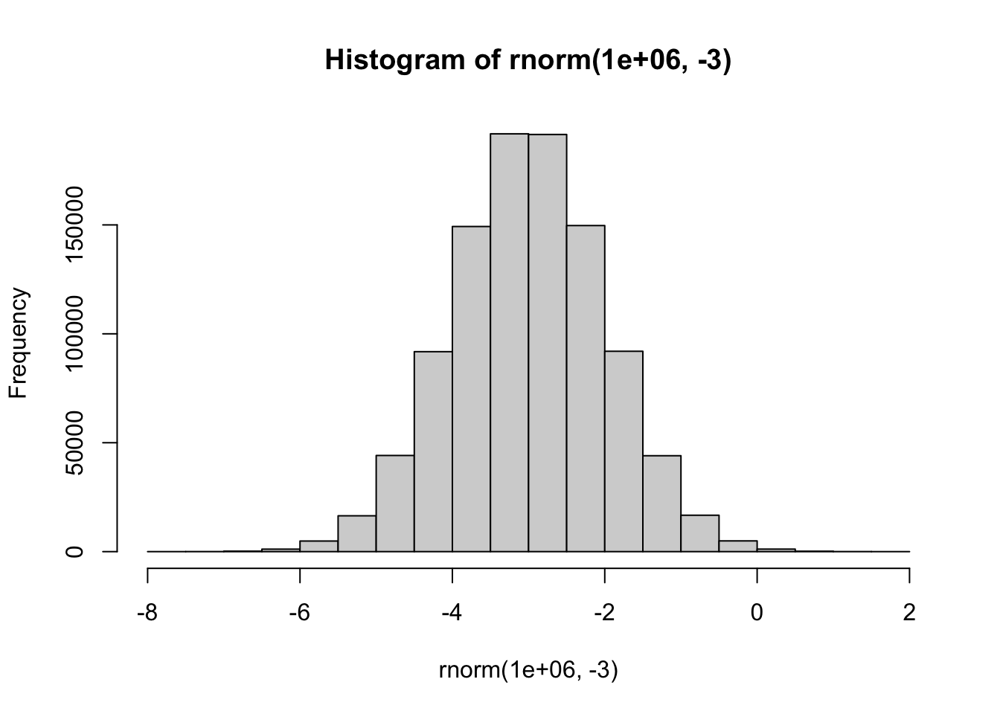
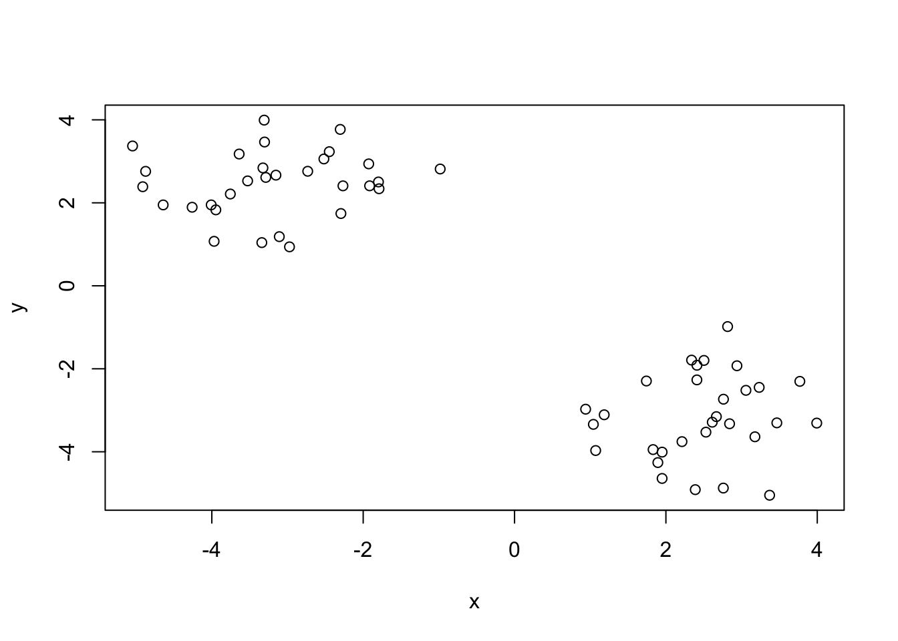
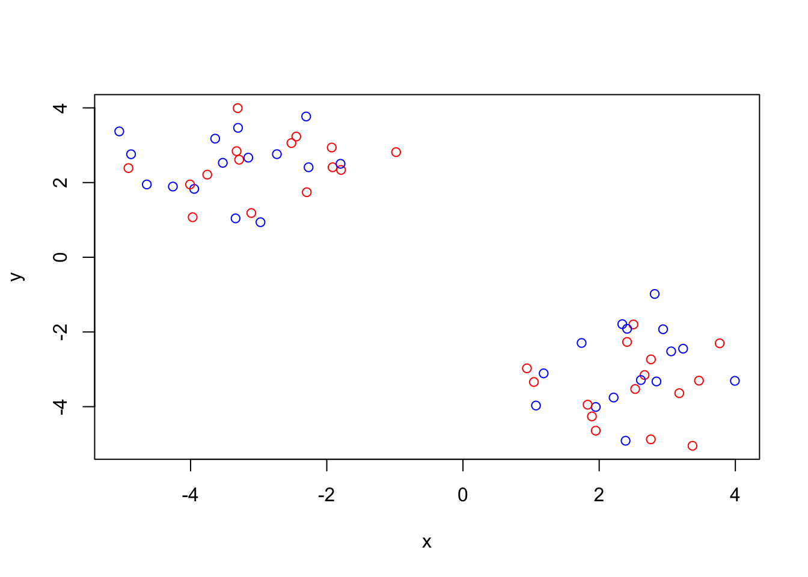
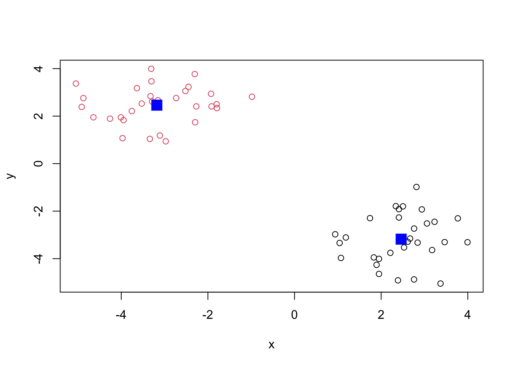
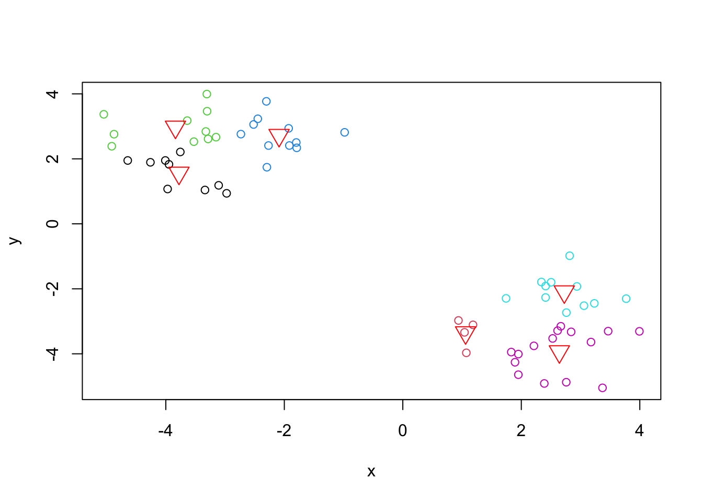
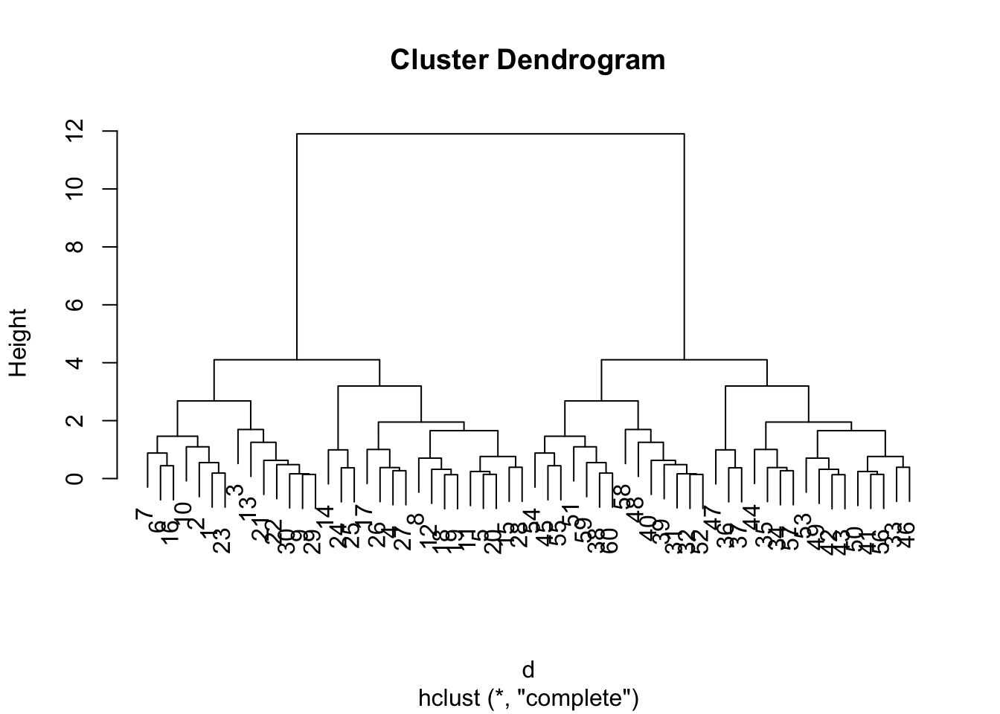
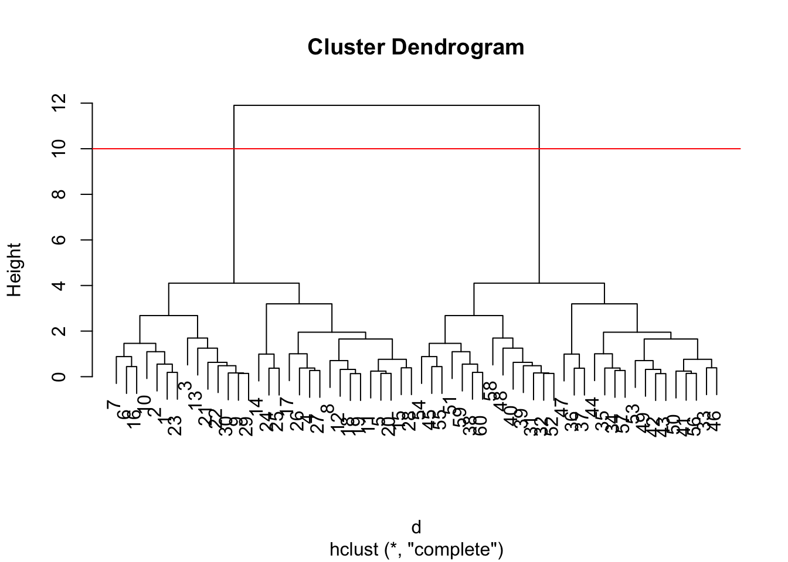
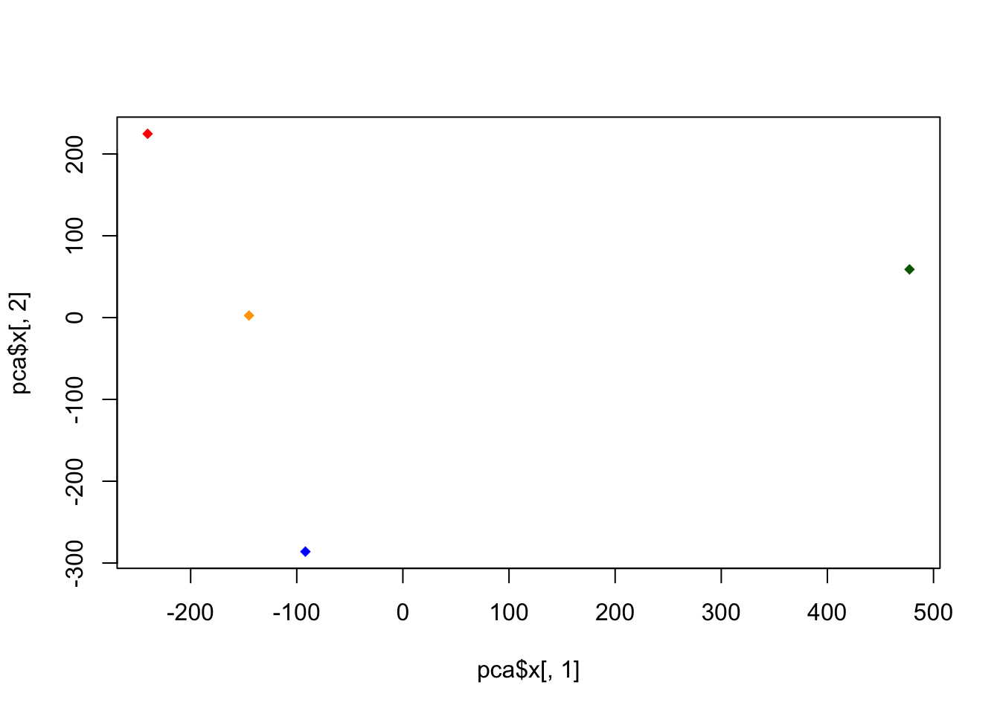

rnorm(10) [1] -0.7736012 1.8180982 0.2908336 1.1733792 0.8700510 -0.7823432
[7] -0.2996849 0.2851213 -0.1084356 -1.3625800In this class, we will explore clustering and dimensionalitly reduction methods.
Make up some data input where we know what the answer should be.
rnorm(10) [1] -0.7736012 1.8180982 0.2908336 1.1733792 0.8700510 -0.7823432
[7] -0.2996849 0.2851213 -0.1084356 -1.3625800hist(rnorm(1000000))hist(rnorm(1000000, -3))
tmp <- c(rnorm(30, -3), rnorm(30, +3))
rev(tmp) [1] 3.6594126 4.1555625 2.2004537 3.2581883 2.0681110 2.9537967
[7] 4.2041507 3.4116976 4.9177142 1.5848496 3.0163351 3.0165914
[13] 3.0835345 3.1540963 2.3218005 2.3683798 4.5243825 3.1151595
[19] 2.7559487 2.9814088 2.2831774 3.3418350 2.1850642 4.4237392
[25] 2.5585060 3.5045351 3.0517384 2.1773724 3.6206883 1.5437064
[31] -0.9479355 -3.4113591 -3.0723496 -3.4355843 -2.6870038 -1.8234855
[37] -2.7215760 -3.0660898 -4.8375579 -3.9320688 -2.3544667 -2.9190751
[43] -2.6563018 -2.7714775 -4.6150820 -3.5282849 -3.6534979 -5.3652004
[49] -4.5404670 -3.1070594 -1.2413444 -4.1774561 -3.5142778 -2.8167693
[55] -2.6160255 -3.8870414 -3.9477837 -3.0414565 -3.2188673 -3.7320148#x <- cbind(tmp, rev(tmp))tmp <- c(rnorm(30, -3), rnorm(30, +3))
x <- cbind(x=tmp, y=rev(tmp))
head(x) x y
[1,] -2.448024 3.232621
[2,] -2.732962 2.760573
[3,] -0.982469 2.815306
[4,] -3.339328 1.041446
[5,] -3.287047 2.612498
[6,] -3.638919 3.176231Quick plot of x to see the two groups at -3, +3 and +3, -3
plot(x)
Use the kmeans() function setting k to 2 and nstart=20. How many things in here are not default. In this case its x and centers. How many clusters we want goes inside the parenthesis.
km <- kmeans(x, centers = 2, nstart=20)
kmK-means clustering with 2 clusters of sizes 30, 30
Cluster means:
x y
1 2.461750 -3.178666
2 -3.178666 2.461750
Clustering vector:
[1] 2 2 2 2 2 2 2 2 2 2 2 2 2 2 2 2 2 2 2 2 2 2 2 2 2 2 2 2 2 2 1 1 1 1 1 1 1 1
[39] 1 1 1 1 1 1 1 1 1 1 1 1 1 1 1 1 1 1 1 1 1 1
Within cluster sum of squares by cluster:
[1] 48.60639 48.60639
(between_SS / total_SS = 90.8 %)
Available components:
[1] "cluster" "centers" "totss" "withinss" "tot.withinss"
[6] "betweenss" "size" "iter" "ifault" Q1. How many points are in each cluster?
km$size[1] 30 30Q2. What component if your result details
cluster assignment/membership?
km$cluster [1] 2 2 2 2 2 2 2 2 2 2 2 2 2 2 2 2 2 2 2 2 2 2 2 2 2 2 2 2 2 2 1 1 1 1 1 1 1 1
[39] 1 1 1 1 1 1 1 1 1 1 1 1 1 1 1 1 1 1 1 1 1 1cluster center?
km$center x y
1 2.461750 -3.178666
2 -3.178666 2.461750Q3. Plot x colored by the kmeans cluster assignment and add cluster centers as blue points
plot(x, col=c("red", "blue"))
plot(x, col=km$cluster)
points(km$centers, col="blue", pch=15, cex=2)
Play with kmeans and ask for different number of clusters. kmeans calculates distance between all the points, then updates where the center is.
km <- kmeans(x, centers = 6, nstart=20)
plot(x, col=km$cluster)
points(km$centers, col="red", pch=6, cex=2)
This is another very useful and widely employed clustering method which has the advantage over kmeans() in that it can help reveal the ______ of the true grouping in your data.
The hclust() function wants a distance matrix as input. Use dist()
kmeans(x, centers=2)
hclust(d)
cutree(hc, k=2)
d <- dist(x)
hc <- hclust(d)
hc
Call:
hclust(d = d)
Cluster method : complete
Distance : euclidean
Number of objects: 60 There is a plot method for hclust() results.
plot(hc)
plot(hc)
abline(h=10, col="red")
To get my cluster membership vector, I had to “cut” my tree to yield sub-trees or branches with all the members of a given cluster residing on the same cut branch. The function to do this is called cutree().
cutree(hc, h=10) [1] 1 1 1 1 1 1 1 1 1 1 1 1 1 1 1 1 1 1 1 1 1 1 1 1 1 1 1 1 1 1 2 2 2 2 2 2 2 2
[39] 2 2 2 2 2 2 2 2 2 2 2 2 2 2 2 2 2 2 2 2 2 2grps <- cutree(hc, h=10)
grps [1] 1 1 1 1 1 1 1 1 1 1 1 1 1 1 1 1 1 1 1 1 1 1 1 1 1 1 1 1 1 1 2 2 2 2 2 2 2 2
[39] 2 2 2 2 2 2 2 2 2 2 2 2 2 2 2 2 2 2 2 2 2 2It is often helpful to use the k= argument to cutree rather than the h= height of cutting with cutree(). This will cut the tree to yield the number of clusters you want.
grps <- cutree(hc, k=4)
grps [1] 1 1 1 2 2 1 1 2 1 1 2 2 1 2 2 1 2 2 2 2 1 1 1 2 2 2 2 2 1 1 3 3 4 4 4 4 4 3
[39] 3 3 4 4 4 4 3 4 4 3 4 4 3 3 4 3 3 4 4 3 3 3KM <- kmeans(x, centers=2)
HC <- hclust(dist(x))
GRPS <- cutree(hc, k=2)
The base R function for PCA is called prcomp(). We use it to reduce dimensionality, which is everything you can measure about a data set. We want to visualize the most important things without losing information. Principal components are new low dimensional axis or surfaces closest to the observations. A line of best fit.
url <- "https://tinyurl.com/UK-foods"
x <- read.csv(url)
head(x) X England Wales Scotland N.Ireland
1 Cheese 105 103 103 66
2 Carcass_meat 245 227 242 267
3 Other_meat 685 803 750 586
4 Fish 147 160 122 93
5 Fats_and_oils 193 235 184 209
6 Sugars 156 175 147 139##Q1. How many rows and columns are in your new data frame named x? What R functions could you use to answer this questions?##
dim(x) or ncol(x) or nrow(x)
rownames(x) <- x[,1]
x <- x[,-1]
head(x) England Wales Scotland N.Ireland
Cheese 105 103 103 66
Carcass_meat 245 227 242 267
Other_meat 685 803 750 586
Fish 147 160 122 93
Fats_and_oils 193 235 184 209
Sugars 156 175 147 139dim(x)[1] 17 4x <- read.csv(url, row.names=1)
head(x) England Wales Scotland N.Ireland
Cheese 105 103 103 66
Carcass_meat 245 227 242 267
Other_meat 685 803 750 586
Fish 147 160 122 93
Fats_and_oils 193 235 184 209
Sugars 156 175 147 139Q2. Which approach to solving the 'row-names problem' mentioned above do you prefer and why? Is one approach more robust than another under certain circumstances?
I believe the second approach to the “row-names problem” is the superior method because it is more efficient. Compared to the first method, which began deleting columns upon running because of the x, -1, the second method does not delete anything. Furthermore, there are less lines of text involved.
barplot(as.matrix(x), beside=T, col=rainbow(nrow(x)))
Q3: Changing what optional argument in the above barplot() function results in the following plot?
pairs(x, col=rainbow(10), pch=16)
Q6. What is the main differences between N. Ireland and the other countries of the UK in terms of this data-set?
pca <- prcomp( t(x))
summary(pca)Importance of components:
PC1 PC2 PC3 PC4
Standard deviation 324.1502 212.7478 73.87622 4.189e-14
Proportion of Variance 0.6744 0.2905 0.03503 0.000e+00
Cumulative Proportion 0.6744 0.9650 1.00000 1.000e+00A “PCA plot” (aka “Score Plot, PC1vPC2 plot, etc) is a plot comparing two plots
pca$x PC1 PC2 PC3 PC4
England -144.99315 2.532999 -105.768945 2.842865e-14
Wales -240.52915 224.646925 56.475555 7.804382e-13
Scotland -91.86934 -286.081786 44.415495 -9.614462e-13
N.Ireland 477.39164 58.901862 4.877895 1.448078e-13Q7. Complete the code below to generate a plot of PC1 vs PC2. The second line adds text labels over the data points
plot(pca$x[,1], pca$x[,2], col=c("orange", "red", "blue", "darkgreen"), pch=18)
plot(pca$x[,1], pca$x[,2], xlab="PC1", ylab="PC2", xlim=c(-270,500))
text(pca$x[,1], pca$x[,2], colnames(x))
Q8. Customize your plot so that the colors of the country names match the colors in our UK and Ireland map and table at start of this document.
plot(pca$x[,1], pca$x[,2], xlab="PC1", ylab="PC2", xlim=c(-270,500))
text(pca$x[,1], pca$x[,2], colnames(x),col=c("orange", "red", "blue", "darkgreen"), pch=18 )
v <- round( pca$sdev^2/sum(pca$sdev^2) * 100 )
v[1] 67 29 4 0z <- summary(pca)
z$importance PC1 PC2 PC3 PC4
Standard deviation 324.15019 212.74780 73.87622 4.188568e-14
Proportion of Variance 0.67444 0.29052 0.03503 0.000000e+00
Cumulative Proportion 0.67444 0.96497 1.00000 1.000000e+00barplot(v, xlab="Principal Component", ylab="Percent Variation")
par(mar=c(10, 3, 0.35, 0))
barplot( pca$rotation[,1], las=2 )